通道的应用
初识通道
通道是用于存储图像颜色信息和选区信息等不同类型信息的灰度图像，一个图像最多可有 56 个通道，所有的新通道都具有与原始图像相同的尺寸和像素数目。在 Photoshop 中包含 3 种类型的通道，分别是颜色通道、Alpha 通道和专色通道。只要是支持图像颜色模式的格式，都可以保留颜色通道；如果要保存 Alpha 通道，可以将文件存储为 PDF、TIFF、PSB 或 Raw 格式；如果要保存专色通道，可以将文件存储为 DCS 2.0 格式。
认识颜色通道
颜色通道是将构成整体图像的颜色信息整理并表现为单色图像的工具。根据图像颜色模式的不同，颜色通道的数量也不同。例如，RGB 模式的图像有 RGB、红、绿、蓝 4 个通道，如图 12-1 所示；CMYK 颜色模式的图像有 CMYK、青色、洋红、黄色、黑色 5 个通道；Lab 颜色模式的图像有 Lab、明度、a、b 4 个通道；而位图和索引颜色模式的图像只有一个位图通道和一个索引通道。
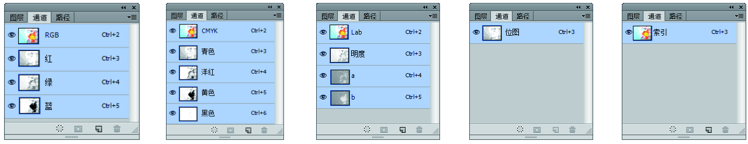
认识Alpha通道
Alpha 通道主要用于选区的存储、编辑与调用。Alpha通道是一个 8 位的灰度通道，该通道用 256 级灰度来记录图像中的透明度信息，定义透明、不透明和半透明区域。其中黑色处于未选中的状态，白色处于完全选择状态，灰色则表示部分被选择状态（即羽化区域）。使用白色涂抹 Alpha 通道可以扩大选区范围；使用黑色涂抹则收缩选区；使用灰色涂抹可以增加羽化范围。
认识专色通道
专色通道主要用来指定用于专色油墨印刷的附加印版。它可以保存专色信息，同时也具有 Alpha 通道的特点。每个专色通道只能存储一种专色信息，而且是以灰度形式来存储的。除了位图模式外，其余所有的色彩模式图像都可以建立专色通道。
详解“通道”面板
打开任意一张图像，在“通道”面板中能够看到 Photoshop 自动为该图像创建了颜色信息通道。“通道”面板主要用于创建、存储、编辑和管理通道。执行“窗口 > 通道”命令可以打开“通道”面板。
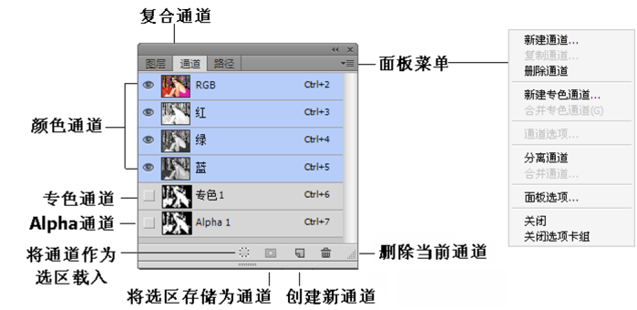
通道的基本操作
快速选择通道
在“通道”面板中单击即可选中某一通道，在每个通道后面有对应的Ctrl+ 数字格式快捷键。
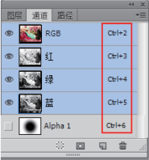
显示/隐藏通道
通道的显示 / 隐藏与图层相同，每个通道的左侧都有一个眼睛图标,单击该图标，可以使相应通道隐藏；单击隐藏状态的通道左侧的图标,可以恢复该通道的显示.
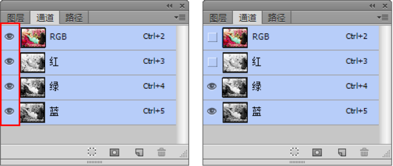
通道练习
重命名通道
要重命名 Alpha 通道或专色通道，可以在“通道”面板中双击该通道的名称，激活文本框，然后输入新名称即可,默认的颜色通道的名称是不能进行重命名的。
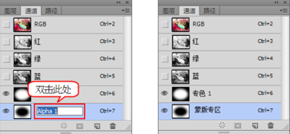
新建Alpha通道
如果要新建 Alpha 通道，可以在“通道”面板中单击“创建新通道”按钮。
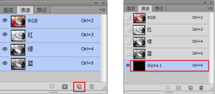
新建和编辑专色通道
专色印刷是指采用黄、品红、青和黑墨四色墨以外的其他色油墨来复制原稿颜色的印刷工艺。包装印刷中经常采用专色印刷工艺印刷大面积底色。
复制通道
想要复制通道，可以在面板菜单中选择“复制通道”命令，即可将当前通道复制出一个副本；或在通道上单击鼠标右键，然后在弹出的菜单中选择“复制通道”命令。
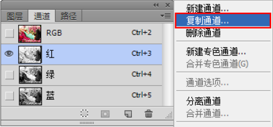
删除通道
1、将通道拖拽到“通道”面板下面的“删除当前通道”按钮上。
2、在通道上单击鼠标右键，然后在弹出的菜单中选择“删除通道”命令。
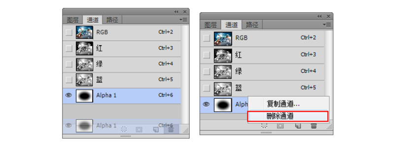
合并通道
在 Photoshop 中可以将多个灰度图像合并为一个图像的通道。要合并的图像必须为打开的已拼合的灰度模式图像，并且像素尺寸相同。不满足以上条件的情况下，“合并通道”命令将不可用。
分离通道
打开一张 RGB 颜色模式的图像，在“通道”面板的菜单中选择“分离通道”命令。可以将红、绿、蓝 3 个通道单独分离成 3 张灰度图像并关闭彩色图像，同时每个图像的灰度都与之前的通道灰度相同。
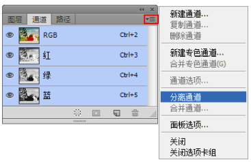
专色通道
专色通道可以保存专色信息，同时也具有Alpha通道的特点。每个专色通道只能存储一种专色信息，而且是以灰度形式来存储的。除了位图模式以外，其余所有的色彩模式图像都可以建立专色通道。
通道的高级操作
“应用图像”命令
执行“图像 > 应用图像”命令，打开“应用图像”对话框。在“ 应 用 图 像 ” 对 话 框 中 可 以 将 作 为“源”的图像的图层或通道与作为“目标”的图像的图层或通道进行混合。
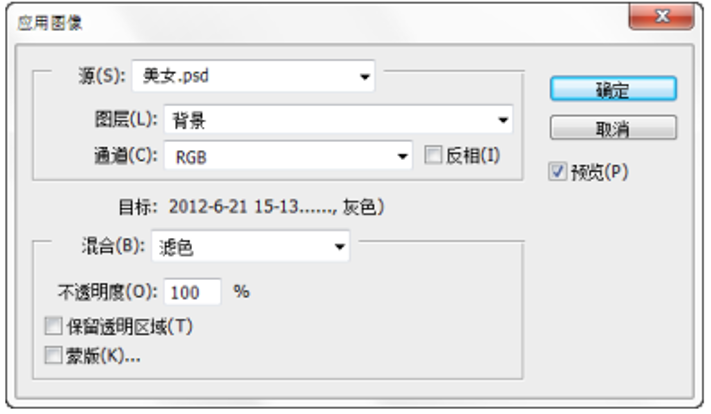
“计算”命令
“计算”命令可以混合两个来自一个源图像或多个源图像的单个通道，得到的混合结果可以是新的灰度图像、选区或通道。执行“图像 > 计算”命令，可以打开“计算”对话框。
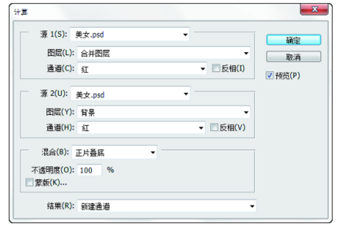
使用通道调整颜色
通道调色是一种高级调色技术，可以对一张图像的单个通道应用各种调色命令（比如曲线），从而达到调整图像中单种色调的目的。
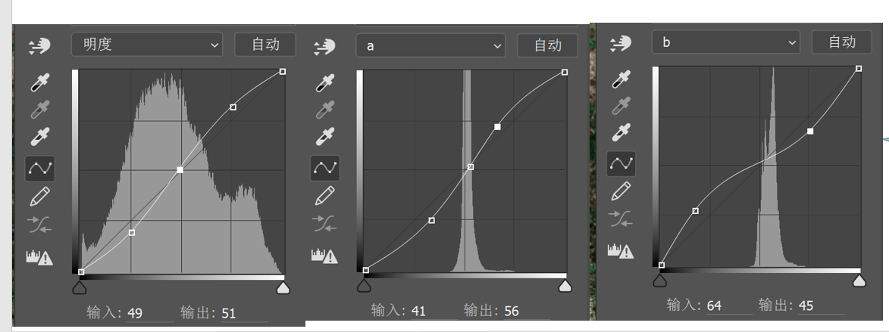
练习
使用通道抠图
通道抠图主要是利用图像的色相差别或明度差别来创建选区，在操作过程中可以多次重复使用“亮度 / 对比 度”、“曲线”、“色阶”等调整命令，以及画笔、加深、减淡等工具对通道进行调整，以得到最精确的选区。通道抠图法常用于抠选毛发、云朵、烟雾以及半透明的婚纱等对象。